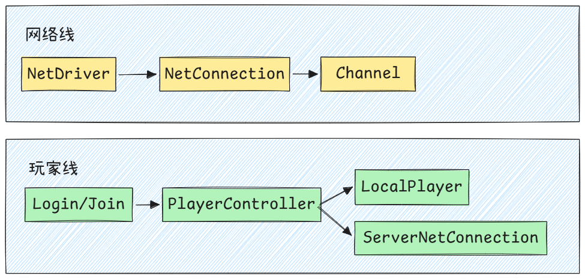
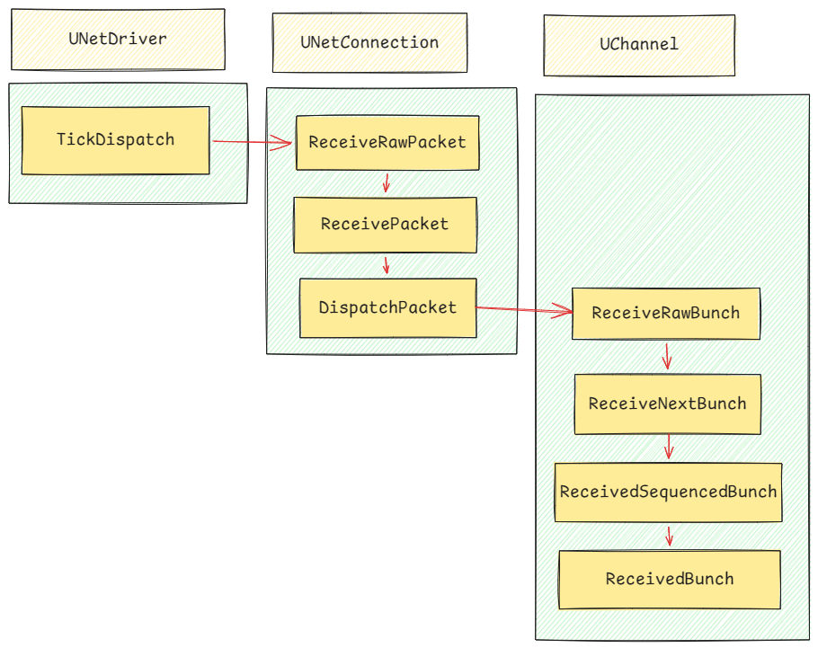
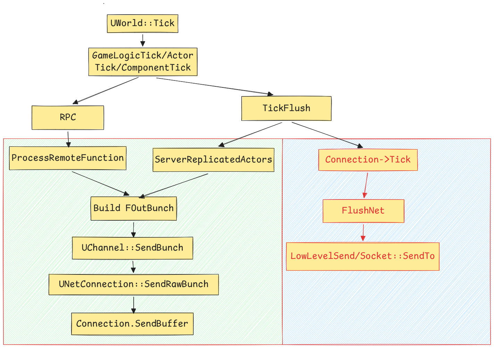

UE网络笔记一：网络总览
这篇笔记内容并不会过多涉及到实际工程中的用法，也不会提到UE最新的网络复制系统Iris，更多希望解析以Replicate和RPC的为模型的UE网络概览，理清数据处理和流向。
前置知识
一个程序如果想和另一台机器上的程序通信，就需要通过Socekt进行发送和接收数据。网络通信一般解决三个问题：发给哪个机器、发给哪个程序，用什么方式发。Socket就是程序进行收发数据的通信端点，常见的TCP和UDP，就是通过Socket使用的。UE最底层使用的UDP，作为传输层协议，它的通信方式更像是，把数据往对应IP地址的端口一塞，它的核心特征是无连接、不保证送达，不保证顺序，也不自动重传，换来的是其开销和延迟的便利。UE会在这个基础上构建自己所需的可靠协议。关于TCP和UDP的内容，上过网络课的应该都比较了解，不再赘述了。
如果游戏引擎给予UDP做网络同步，势必要在这此基础上封装一层自己的机制，例如、加上数据包序号、给某些需要保证到达的消息增加确认机制、对丢包内容选择性重发、控制发包频率、包括在网络波动的情况下调整发送的策略，决定同步的对象等等。因为UDP只是一个很快的传输层工具，需要补全大量面对游戏场景的机制。
概念说明
UE网络运行的中心类可以分两条线理解。

NetDriver
UWorld是游戏世界的顶层运行容器了，无论是服务器还是客户端，都有自己的world。从网络的角度看，地图里的Actor/Level/GameMode/GameState等等，则是需要进行同步的对象，因此UWorld可以认为是提供网络复制发生的上下文。而NetDriver就绑定在World中。
bool UWorld::Listen( FURL& InURL )
{
...
// Create net Driver
if (GEngine->CreateNamedNetDriver(this, NAME_GameNetDriver, NAME_GameNetDriver))
{
NetDriver = GEngine->FindNamedNetDriver(this, NAME_GameNetDriver);
NetDriver->SetWorld(this);
// ...
}
// ...
}NetDriver是挂在 World 网络上下文下的网络驱动器。
它负责驱动网络信息的收发、管理连接、管理Actor复制的调度、以及维护网络相关的状态。
在服务器视角下，服务器上的NetDriver会管理多个客户端连接，它维护了一组ClientConnection
在客户端视角下，客户端上的NetDriver则管理到服务器的连接。
/** Array of connections to clients (this net driver is a host) - unsorted, and ordering changes depending on actor replication */
UPROPERTY()
TArray<TObjectPtr<UNetConnection>> ClientConnections;
/** Connection to the server (this net driver is a client) */
UPROPERTY()
TObjectPtr<class UNetConnection> ServerConnection;NetConnection
NetConnection的生命周期主要由NetDriver和连接状态主导。
简单来说
- 服务器端，每个远端客户端连接进来时，
Server NetDriver创建一个ClientConnection。 - 客户端端，主动连接服务器时，
Client NetDriver创建一个ServerConnection。 Connection创建之后先通过ControlChannel完成握手和登录流程；登录成功后，服务器才创建对应的PlayerController，并将PlayerController与该Connection绑定。
NetConnection管理连接基本的事情。例如Packet收发、ACK/丢包/重传、可靠/不可靠数据处理、Channel集合等。
Channel
Channel应该理解为建立NetConnection上的逻辑数据通道。既然已经建立了一条网络连接，其收发到的数据应该被处理并发送给其他消费数据的对象方，而承载这些分发数据流的载体就是Channel。
常见的Channel包含：
ControlChannel：连接控制、登录、握手、Travel 等ActorChannel：Actor 复制、RPC、Actor 创建销毁VoiceChannel：语音
其生命周期有NetConnection和具体网络业务决定，连接存在期间，会按需打开Channel、业务结束或者连接关闭时，则会关闭Channel。
这里再额外解释一下`ActorChannel` , 这是最常见和最重要的Channel类型。服务器要把某个 Actor 同步给某个客户端时，通常会在该客户端的 NetConnection 上创建或复用对应的 ActorChannel。
ActorChannel一定是某个Connection针对某个Actor的专用通道。举个可能的例子
服务器上有 Actor_A。
Client_1 能看到 Actor_A：
ServerConnection_1 上有 Actor_A 对应的 ActorChannel。
Client_2 也能看到 Actor_A：
ServerConnection_2 上也有 Actor_A 对应的 ActorChannel。也就是说，一个服务器 Actor 可以对应多个 ActorChannel。每个 ActorChannel 属于不同的 Connection。
LocalPlayer/ServerConnection
见上图，为什么这里要单独拿出来提这两个呢，因为这里是一个比较容易混淆的地方。
UPlayer 是一个玩家来源抽象。它的子类包含ULocalPlayer、UNetConnection。
APlayerController 中有 Player 概念，表示这个控制器的玩家来源，见源码
/** UPlayer associated with this PlayerController.
Could be a local player or a net connection. */
UPROPERTY()
TObjectPtr<UPlayer> Player;- 对于客户端本地玩家通常是
PlayerController->Player = LocalPlayerULocalPlayer 是本地玩家对象，表示当前进程中的一个本地玩家输入源和视口。
它不是网络连接，也不是服务器上的远端玩家对象。
- 而对于服务器的远端玩家则通常是
PlayerController->Player = NetConnectionUNetConnection 一方面是网络连接对象，另一方面在服务器远端玩家场景下，又可以作为 PlayerController 的 Player 来源。
数据收包流程
一条完整的收包主线如下，如果调试过RPC函数，这个堆栈应该会非常熟悉，接下来这一节内容会结合源码，拆解收包流程。

UIpNetDriver::TickDispatch
IpNetDriver作为NetDriver的子类，是实际业务的承载者。UIpNetDriver::TickDispatch 是传统 UDP 路径的每帧收包入口
UWorld::Tick
-> BroadcastTickDispatch
-> UNetDriver::TickDispatch
-> UIpNetDriver::TickDispatch它最核心的职责是从socket或者接受队列中取packet，然后按地址找到连接。
void UIpNetDriver::TickDispatch(float DeltaTime)
{
Super::TickDispatch(DeltaTime);
// ...
for(FPacketIterator It(this); It ; ++It)
{
FReceivedPacketView ReceivedPacket;
bool bOk = It.GetCurrentPacket(ReceivedPacket); // 取Packet
TSharedRef<const FInternetAddr> FromAddr = ReceivedPacket.Address.ToSharedRef();
UNetConnection* Connection = nullptr;
UIpConnection* MyServerConnection = GetServerConnection();
// ...
// 客户端: 找到服务器的Connection
if(MyServerConnection)
{
if (MyServerConnection->RemoteAddr->CompareEndpoints(*FromAddr))
{
Connection = MyServerConnection;
}
}
// 服务器：从Packet地址匹配ClientConnection,找到对应的客户端Connection
if (Connection == nullptr)
{
if (TObjectPtr<UNetConnection>* ConnectionMapValue = MappedClientConnections.Find(FromAddr))
{
Connection = *ConnectionMapValue;
}
}
if (Connection == nullptr)
{
// 处理未关联NetConnection的数据包，执行握手重建connection或者是映射
Connection = ProcessConnectionlessPacket(ReceivedPacket, It.GetWorkingBuffer());
}
if (Connection != nullptr && ReceivedPacket.DataView.NumBytes() > 0)
{
Connection->ReceivedRawPacket(
(uint8*)ReceivedPacket.DataView.GetData(),
ReceivedPacket.DataView.NumBytes());
}
}
}
简单来说，NetDriver
- 客户端通常只有
ServerConnection，只接受远端地址匹配服务器的 packet。 - 服务器通过
MappedClientConnections按来源地址找到某个客户端连接。 - 找不到连接时才会进入
ProcessConnectionlessPacket，处理握手、challenge、无连接控制包。 - 只有拿到
UNetConnection，普通 packet 才进入ReceivedRawPacket。
UNetConnection::ReceivedRawPacket
Connection在这里对原始数据进行一些处理，主要交给PacketHandle进行处理，负责对握手、加密校验等等、Handel这里有可能直接消费掉这个包数据，不再往下传了。它处理完毕后的数据会进入到ReceivePacket进行下一步处理
void UNetConnection::ReceivedRawPacket( void* InData, int32 Count )
{
// ...
uint8* Data = (uint8*)InData;
if (Handler.IsValid())
{
FReceivedPacketView PacketView;
PacketView.DataView = { Data, Count, ECountUnits::Bytes };
// 进入Handler的处理链路
EIncomingResult Result = Handler->Incoming(PacketView);
// 如果处理后依然有数据的话，继续下发
Count = PacketView.DataView.NumBytes();
if (Count == 0)
{
return;
}
Data = PacketView.DataView.GetMutableData();
}
FBitReader Reader(Data, Count * 8);
ReceivedPacket(Reader, false, true);
}`ReceivedPacket::ReceivedPacket`
这一层接手的数据通过了Raw层处理，可以按UE网络协议进行解析了。
- 它会解析当前收到的
PacketHander，更新本端接受侧的InPacketId，包括一些丢包统计和顺序状态。 - 然后处理
ACK/NAK的逻辑。这里的ACK / NAK指向的是本端之前发出去的 packet，因此会触发ReceivedAck/ReceivedNak，进而更新本端的可靠性状态 - 之后，才是调用
DispatchPacket，把Packet中剩余的数据继续下发处理 - 最后，还会根据处理结果，记录对当前
Packet的接受结果，等待之后发送给对端
`ReceivedPacket::DispatchPacket`
DispatchPacket会开始处理Packet中的Channel数据，一个Packet可以包含多个Bunch。
简单来说
- 从数据流中读出 bunch header 和 payload，构建
FInBunch - 通过
ChIndex / ChName找到或创建 channel - 把
FInBunch交给Channel->ReceivedRawBunch
这里依然不会取解释Actor的属性或者是执行RPC，具体的语义依然要由Channel自身来决定
void UNetConnection::DispatchPacket(
FBitReader& Reader,
int32 PacketId,
bool& bOutSkipAck,
bool& bOutHasBunchErrors)
{
// ...
while (!Reader.AtEnd() && GetConnectionState() != USOCK_Closed)
{
// 构建InBunch
FInBunch Bunch(this);
uint8 bControl = Reader.ReadBit();
Bunch.PacketId = PacketId;
Bunch.bOpen = bControl ? Reader.ReadBit() : 0;
Bunch.bClose = bControl ? Reader.ReadBit() : 0;
Bunch.bReliable = Reader.ReadBit();
uint32 ChIndex = 0;
Reader.SerializeIntPacked(ChIndex);
// ...
UChannel* Channel = Channels[Bunch.ChIndex];
// 从 Packet里取出当前Bunch的payload,挂给FInBunch
int32 BunchDataBits = Reader.ReadInt(UNetConnection::MaxPacket * 8);
Bunch.ResetData(Reader, BunchDataBits, AlignTo32Bits(BunchDataBits));
// ..
if (Channel == nullptr)
{
//..
// 如果没有找到能够处理的Bunch的Channel，在这里创建出来
Channel = CreateChannelByName(
Bunch.ChName,
EChannelCreateFlags::None,
Bunch.ChIndex);
}
// 发给Channel处理Bunch
if (Channel)
{
Channel->ReceivedRawBunch(Bunch, bLocalSkipAck);
}
}
}UChannal::ReceivedRawBunch
packet 层顺序和 channel 层 reliable 顺序是两套东西。ReceivedPacket 处理 packet id；ReceivedRawBunch 会对接受的Bunch进行一些顺序处理。
void UChannel::ReceivedRawBunch(FInBunch& Bunch, bool& bOutSkipAck)
{
if (Bunch.bHasPackageMapExports)
{
PackageMap->ReceiveNetGUIDBunch(Bunch);
}
if (Bunch.bReliable &&
Bunch.ChSequence != Connection->InReliable[ChIndex] + 1)
{
// 找到该Bunch应该插入的等待链表位置，把Bunch塞进去
FInBunch** InPtr;
for( InPtr=&InRec; *InPtr; InPtr=&(*InPtr)->Next )
{
if( Bunch.ChSequence==(*InPtr)->ChSequence )
{
// Already queued.
return;
}
else if( Bunch.ChSequence<(*InPtr)->ChSequence )
{
// Stick before this one.
break;
}
}
FInBunch* New = new FInBunch(Bunch);
New->Next = *InPtr;
*InPtr = New;
NumInRec++;
// ...
}
else
{
// bDeleted意味着处理这个Bunch的过程中，当前Channel被关闭或者清理
// 所以如果bDeleted为真,应该返回避免操作此Channel
bool bDeleted = ReceivedNextBunch( Bunch, bOutSkipAck );
if (bDeleted)
{
return;
}
while (InRec)
{
if(InRec->ChSequence != Connection->InReliable[ChIndex] + 1)
break;
FInBunch* Release = InRec;
InRec = InRec->Next;
NumInRec--;
Release->Next = nullptr;
bDeleted = ReceivedNextBunch( *Release, bLocalSkipAck );
// ...
delete Release;
}
}
}- 这段逻辑的核心操作在于，Reliable Bunch 必须按 Channel 内的可靠序号严格顺序处理；非 Reliable Bunch 可以直接处理。如果当前接受到的Reliable Bunch乱序，会插入到
InRec中 。InRec本质是已经收到，但暂时不能处理的Reliable Bunch队列。它缓存乱序到达的Reliable Bunch，等缺失的Reliable Bunch到达后，再按顺序释放处理。 - 另一个问题是：什么情况下Bunch会被标记为Reliable呢？简单来说，网络层要求必须到达，且按顺序处理的Channel数据包，都会被标记为Reliable Bunch。例如Reliable的RPC，除此之外，像是连接握手、加载地图、NetGUID等控制信息、一些可靠传输的ActorChannel数据，都有可能通过Reliable Bunch发送，所以说，Reliable RPC 是 Reliable Bunch 的典型来源，但 Reliable Bunch 不只来自 RPC。
UChannel::**ReceivedNextBunch**
简单来说，`ReceivedNextBunch` 会处理Partical Bunch的拼接，拼接完整后再交给具体的Channel。
bool UChannel::ReceivedNextBunch(FInBunch& Bunch, bool& bOutSkipAck)
{
// 1. 可靠 Bunch：更新本通道收到的可靠序号
if (Bunch.bReliable)
{
check(Bunch.ChSequence == Connection->InReliable[Bunch.ChIndex] + 1);
Connection->InReliable[Bunch.ChIndex] = Bunch.ChSequence;
}
FInBunch* HandleBunch = &Bunch;
// 2. 如果是分片 Bunch，需要先重组
if (Bunch.bPartial)
{
// 分片重做逻辑...
}
// 通道打开等校验状态...
// 最终交给真正的有序 Bunch 处理逻辑
return ReceivedSequencedBunch(*HandleBunch);
}Bunch可以理解为Channel上的一段逻辑消息，一个逻辑消息可能太大，超过单次发送的允许或者是单个Bunch的大小限制，所以有时候一个大的Bunch会被拆成多个partial bunch进行发送，这也是为什么在接收端这里需把这些片段再拼接起来。而到了`ReceivedSequencedBunch` 这一层，它拿到的则是按顺序重组的完整Bunch，进行真正的处理逻辑。
`UChannel::ReceivedSequencedBunch`
ReceivedSequencedBunch 的主线非常短
bool UChannel::ReceivedSequencedBunch(FInBunch& Bunch)
{
if (!Closing)
{
ReceivedBunch(Bunch);
}
if (Bunch.bClose)
{
ConditionalCleanUp(false, Bunch.CloseReason);
return true;
}
return false;
}ReceivedBunch是一个虚函数，不同的Channel在这里处理各自的业务语义。例如
- UControllChannel：连接控制消息
- UActorChannel：Actor创建/属性复制/RPC等
- UVoiceChannel：语言数据
数据发包流程
数据发送流程可以从服务端和客户端两方视角里来看。客户端和服务器都会发包，但是它们发出的东西不完全一样，除了RPC外，服务端还承担了把自己权威Actor状态复制给各个客户端。

这里可以分成两个阶段，一个是收集Bunch的阶段，此帧中游戏逻辑产生的FOutBunch，通过各自UChannel::SendBunch，最终写入名为SendBuffer的缓存中，在这里等候后续发包
class UNetConnection : public UPlayer
{
public:
// Packet.
FBitWriter SendBuffer; // Queued up bits waiting to send
}另一个则是发送阶段，见UNetDriver::TickFlush。这是每帧出站的主要入口，最终通过FlushNet 发包
UNetDriver::TickFlush
void UNetDriver::TickFlush(float DeltaSeconds)
{
...
if (IsServer() && ClientConnections.Num() > 0)
{
ServerReplicateActors(DeltaSeconds);
}
if (ServerConnection)
{
ProcessLocalClientPackets();
ServerConnection->Tick(DeltaSeconds);
}
else
{
ProcessLocalServerPackets();
}
for (UNetConnection* Connection : ClientConnections)
{
Connection->Tick(DeltaSeconds);
}
}这段代码把服务端和客户端的差异分得很清楚。
- 服务端有
ClientConnections，会在传统复制路径中执行ServerReplicateActors，产生 Actor 复制数据，然后逐个ClientConnection->Tick，把连接上的待发送数据通过FlushNet发包。 - 客户端通常有
ServerConnection，客户端不需要走复制Actor，因为它并非权威端。客户端本地业务产生的上行数据，通常已经在游戏逻辑阶段写到了ServerConnection.SendBuffer，后续由ServerConnection->Tick，把连接上的待发送数据通过FlushNet发包
void UNetConnection::Tick(float DeltaSeconds)
{
...
if (TimeSensitive ||
(Driver->GetElapsedTime() - LastSendTime) > Driver->KeepAliveTime)
{
bool bHandlerHandshakeComplete = !Handler.IsValid() || Handler->IsFullyInitialized();
// Delay any packet sends on the server, until we've verified that a packet has been received from the client.
if (bHandlerHandshakeComplete && HasReceivedClientPacket())
{
FlushNet();
}
}
}RPC
RPC远程过程调用，它并不是直接调用远端函数，而是会先序列化成FOutBunch ，走ActorChannel的通道发送
void UNetDriver::ProcessRemoteFunctionForChannelPrivate(...)
{
if (Ch->OpenPacketId.First == INDEX_NONE)
{
// ...
if (!bIsServer)
{
return;
}
Ch->SetForcedSerializeFromRPC(true);
Ch->ReplicateActor();
Ch->SetForcedSerializeFromRPC(false);
}
FOutBunch Bunch(Ch, 0);
if (Function->FunctionFlags & FUNC_NetReliable)
{
Bunch.bReliable = 1;
}
FNetBitWriter TempWriter(...);
RepLayout->SendPropertiesForRPC(Function, Ch, TempWriter, Parms);
...
if (QueueBunch)
{
Ch->QueueRemoteFunctionBunch(TargetObj, Function, Bunch);
}
else
{
Ch->SendBunch(&Bunch, true);
}
}这里简单体积两个细节。
- RPC参数通过
RepLayout->SendPropertiesForRPC序列化，写入函数标识和参数。 - 如果
ActorChannel没初始化打开，客户端一侧直接return。因为客户端不能在服务器还没有建立连接的时候就发RPC，而如果是服务器发给客户端，服务器会先强制ReplicateActor(),让客户端认识这个Actor，再调用其上的RPC。
Actor复制
传统的复制路径入口（这里写传统的意思就是非IRis的复制系统）是ServerReplicateActors
int32 UNetDriver::ServerReplicateActors(float DeltaSeconds)
{
if (ClientConnections.Num() == 0)
{
return 0;
}
if (ReplicationDriver)
{
return ReplicationDriver->ServerReplicateActors(DeltaSeconds);
}
ReplicationFrame++;
const int32 NumClientsToTick =
ServerReplicateActors_PrepConnections(DeltaSeconds);
if (NumClientsToTick == 0)
{
return 0;
}
ServerReplicateActors_BuildConsiderList(CurrentConsiderList, ServerTickTime);
for (UNetConnection* Connection : ClientConnections)
{
if (Connection->ViewTarget)
{
ServerReplicateActors_ForConnection(Params);
}
}
}我们知道服务器并不是把所有的Actor广播给所有客户端，它会先构建本帧值得考虑的 Actor 列表，再针对每条连接去判断相关性、优先级、level 可见性等等。
看UNetDriver::ServerReplicateActors_ProcessPrioritizedActorsRange ，这里是真正进入某个Actor进行写出的位置。
int32 UNetDriver::ServerReplicateActors_ProcessPrioritizedActorsRange(...)
{
if (!Connection->IsNetReady())
{
return 0;
}
for (...)
{
UActorChannel* Channel = PriorityActors[j]->Channel;
AActor* Actor = ActorInfo->Actor;
const bool bLevelInitializedForActor =
IsLevelInitializedForActor(Actor, Connection);
if (bIsRecentlyRelevant)
{
if (Channel == nullptr && bLevelInitializedForActor)
{
**Channel = (UActorChannel*)Connection->CreateChannelByName(
NAME_Actor,EChannelCreateFlags::OpenedLocally);**
if (Channel)
{
Channel->SetChannelActor(Actor, ESetChannelActorFlags::None);
}
}
if (Channel && Channel->IsNetReady())
{
Channel->ReplicateActor();
}
}
if ((!bIsRecentlyRelevant || Actor->GetTearOff()) && Channel != nullptr)
{
Channel->Close(EChannelCloseReason::Relevancy);
}
}
}对于服务器来说，ActorChannel 一定是隶属于某个Connection的。而一个Connection会关联一个客户端。也就是说，同一个服务端 Actor，如果要复制给三个客户端，就可能分别在三个 ClientConnection 上有三个 ActorChannel。
`UActorChannel::ReplicateActor`
在这里，服务器的Actor复制会写入FOutBunch
int64 UActorChannel::ReplicateActor()
{
...
FOutBunch Bunch(this, 0);
if (RepFlags.bNetInitial && OpenedLocally)
{
Connection->PackageMap->SerializeNewActor(
Bunch,
this,
static_cast<AActor*&>(Actor));
}
if (!bIsNewlyReplicationPaused)
{
bWroteSomethingImportant |=
ActorReplicator->ReplicateProperties(Bunch, RepFlags);
bWroteSomethingImportant |=
DoSubObjectReplication(Bunch, RepFlags);
bWroteSomethingImportant |=
UpdateDeletedSubObjects(Bunch);
}
if (bWroteSomethingImportant)
{
FPacketIdRange PacketRange = SendBunch(&Bunch, 1);
...
}
}初始复制时，SerializeNewActor 会写入远端创建或绑定这个 Actor 所需的信息。后续属性变化由 FObjectReplicator / FRepLayout 写入。
`UChannel::SendBunch`
我们上文一直说到FOutBunch，这是和收包侧的FInBunch对应的。可以理解为携带相关Channel连接信息的数据流。
这些连接信息最主要包括
ChIndex/ChName：这段数据属于哪条 channel。bReliable：是否需要可靠、有序、可重发。bOpen/bClose：是否打开或关闭 channel。bPartial：是否是一个大 bunch 拆出来的分片。bHasPackageMapExports/bHasMustBeMappedGUIDs：是否携带对象引用导出相关信息。
后续 UNetConnection::SendRawBunch 会把这些信息写成 bunch header。收包侧的 DispatchPacket 再根据这些 header 还原出 FInBunch，找到对应的 channel。
FPacketIdRange UChannel::SendBunch(FOutBunch* Bunch, bool Merge)
{
...
if (OpenedLocally && OpenPacketId.First == INDEX_NONE)
{
Bunch->bOpen = 1;
}
TArray<FOutBunch*>& OutgoingBunches = Connection->GetOutgoingBunches();
OutgoingBunches.Reset();
// ... 总之在这里构建Bunch所需的写入内容
if (Bunch->GetNumBits() > MAX_SINGLE_BUNCH_SIZE_BITS)
{
// split into partial bunches
...
}
else
{
OutgoingBunches.Add(Bunch);
}
for (FOutBunch* NextBunch : OutgoingBunches)
{
NextBunch->bReliable = Bunch->bReliable;
NextBunch->bOpen = Bunch->bOpen;
NextBunch->bClose = Bunch->bClose;
NextBunch->ChIndex = Bunch->ChIndex;
NextBunch->ChName = Bunch->ChName;
FOutBunch* ThisOutBunch = PrepBunch(NextBunch, OutBunch, Merge);
int32 PacketId = SendRawBunch(ThisOutBunch, Merge, ...);
...
}
}Reliable RPC 通常会让 Bunch.bReliable = true，于是进入 channel 的可靠队列，等待 ack/nak 后移除或重发。
普通属性复制更偏状态同步，如果丢了一次更新，后续复制仍然会基于其他机制进行追赶，让客户端追赶到服务端认为需要同步的状态，它关心的是客户端最终拿到足够新的状态，而不是每个中间变化都逐条可靠送达。某些 Actor 复制数据在初始打开等场景下可能被打进 reliable bunch，但这只能说明特定 bunch 走了可靠传输，不代表“属性复制整体就是 reliable”。
简单来说：Reliable RPC 保证的是“调用这条消息到达”，属性复制追求的是“状态最终同步到位”。
关于SendBuffer
可以理解为SendBuffer 是 UNetConnection 上的出站 packet 组装缓冲区。
// NetConnection.h
FBitWriter SendBuffer; // Queued up bits waiting to send只有等到FlushNet时，SendBuffer里面的内容才会被当成一个packet交给LowLevelSend。
`UNetConnection::FlushNet`
在这里是连接层提交Packet的位置，这里面对的数据已经是组装好的Packet内容了。
void UNetConnection::FlushNet(bool bIgnoreSimulation)
{
ValidateSendBuffer();
LastEnd = FBitWriterMark();
TimeSensitive = 0;
if (SendBuffer.GetNumBits() ||
HasDirtyAcks ||
Driver->GetElapsedTime() - LastSendTime > Driver->KeepAliveTime)
{
FOutPacketTraits Traits;
if (SendBuffer.GetNumBits() == 0)
{
WriteBitsToSendBuffer(NULL, 0);
Traits.bIsKeepAlive = true;
}
if (Handler.IsValid())
{
Handler->OutgoingHigh(SendBuffer);
}
SendBuffer.WriteBit(1);
if (!IsInternalAck())
{
WritePacketHeader(SendBuffer);
WriteFinalPacketInfo(SendBuffer, PacketSentTimeInS);
}
if (Driver->IsNetResourceValid())
{
LowLevelSend(SendBuffer.GetData(), SendBuffer.GetNumBits(), Traits);
}
PacketNotify.CommitAndIncrementOutSeq();
++OutPacketId;
LastSendTime = Driver->GetElapsedTime();
InitSendBuffer();
}
}FlushNet不要求一定有业务 bunch。只要存在 dirty ack，或者 keepalive 到时间，也可能发出 packet。FlushNet最后调用的是虚函数LowLevelSend。传统 UDP 路径下会进入UIpConnection，到这里已经编码成字节流，FScoket::SendTo不会关心是Actor复制还是RPC，只负责把数据发给远端地址了
void UIpConnection::LowLevelSend(void* Data, int32 CountBits, FOutPacketTraits& Traits)
{
uint8* DataToSend = static_cast<uint8*>(Data);
if (!RemoteAddr.IsValid() || !RemoteAddr->IsValid())
{
return;
}
SendToRemote(DataToSend, CountBits, Traits);
}
void UIpConnection::SendToRemote(uint8* DataToSend, int32 CountBits, FOutPacketTraits& Traits)
{
if (Handler.IsValid() && !Handler->GetRawSend())
{
const ProcessedPacket ProcessedData =
Handler->Outgoing(DataToSend, CountBits, Traits);
DataToSend = ProcessedData.Data;
CountBits = ProcessedData.CountBits;
}
int32 CountBytes = FMath::DivideAndRoundUp(CountBits, 8);
FSocket* CurSocket = GetSocket();
CurSocket->SendTo(
DataToSend,
CountBytes,
BytesSent,
*RemoteAddr);
}
其他
- 问题一：
TickDispatch会通过FPacketIterator每帧取多少个入站packet
并不是每帧固定取多少个包，如果发送的包很少会尽快处理。如果包很多，会根据容量和预算决定。整体上遵循在本帧尽力把可处理的packet推进到下个流程
- 问题二：网络包到达机器是异步的，包先来了还没消费怎么办
会有SocketBuffer。如果由开启receive thread，它负责读取后塞给游戏线程的包队列，等待消费。如果没有，游戏线程直接从socket取包。
- 怎么表达网络同步中一个跨端对象，怎么认出来是哪个Actor的
不是内存地址，UE用NetGUID来标识，它是网络层发给某个Actor的唯一编号。
- 同一个Packet中，客户端先处理属性，还是RPC
通常按Bunch在Packet里的顺序处理。因此不要用“同包内属性一定先于 RPC”或“RPC 一定先于属性”作为逻辑前提。
尽管借助了AI梳理，不过本文依然保持了古法写作。在AI时代，阅读源码变成一件极其没有门槛的事情，AI近乎量子速读的能力，能快速厘清源码内容，抓住主要脉络，真的非常方便了。大部分草稿散落在自己的笔记中，有点犹豫有没有写的必要，不过工作间隙梳理成文，把内容内化到脑子里，依然要花费必须的时间，也算帮助消化吸收了。